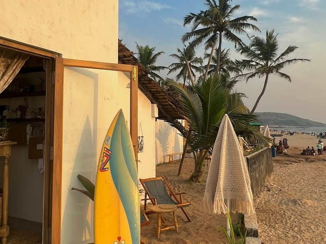

old enough to know better young enough to do it anyway

JOURNEY 00 THE DOSSIER
GOA
17–20 OCTOBER 2026
YOU COULD JUST GO TO GOA. OR MAKE A PLOT OUT OF IT.
Four days. Four chapters. One plot.
01Bollywood After Dark02White Flamingo03Lost In Goa04The Hangover Club
20 PEOPLE · 4 DAYS · 3 NIGHTS
10 GIRLS · 10 GUYS · 18–30
FROM ₹14,999PER PERSON
REQUEST YOUR INVITE →
01THE PREMISE
YOU COULD JUST GO TO GOA. OR YOU COULD MAKE A PLOT OUT OF IT.
Anyone can book Goa.
The hard part is finding the right people to experience it with. That's where Plot Twist comes in.
THE PLOT TWIST FORMULA
10/10ENERGY
Good stories. Big personalities. Zero boring conversations.
CURATED EXPERIENCES
The kind of plans you say yes to before asking what time you're coming back.
HANDPICKED STAYS
Somewhere good enough to want to wake up. Comfortable enough to survive the night.
20 PEOPLE
Small enough to become a family. Big enough to never run out of stories.
YOU'LL FIT RIGHT IN IF…
You say yes before you know the plan.
You'd rather chase a waterfall than spend the day in your room.
You like meeting people who were strangers five minutes ago.
You collect stories, not just places.
You make plans better by being there.
IF YOU NEED EVERYTHING TO GO ACCORDING TO PLAN…
you may have opened the wrong itinerary.
A NOTE FROM THE GUY WHO STARTED THIS
I've travelled enough to realise the best part of a trip is almost never the place.
It's the people, the random plans and the stories you somehow end up telling for years.
Plot Twist is my attempt to get more of those trips into the world.
— Akshat
PLOT TWIST · JOURNEY 00 · GOA02
SAT 17 OCTCHAPTER 01
BOLLYWOOD AFTER DARK
First day energy. By night, everyone’s got an alter ego.
the entrance matters more than the outfit.
ARRIVAL
CHECK IN
Drop the bags. Meet the cast.
AFTERNOON
BEACH + ADVENTURE
Jet ski+, water, sand. Goa starts here.
+ JET SKI: OPTIONAL ADD-ON · NOT INCLUDED
GOLDEN HOUR
FIRST SUNSET
The one everyone photographs badly.
EVENING
GET READY
Bollywood mode: on.
NIGHT
BOLLYWOOD AFTER DARK
Make an entrance.
LATE
CLUB HOPPING
For whoever’s still standing.
17 OCTOBER
SATURDAY
CHAPTER 01
starts slow. does not end slow.
BY MIDNIGHT, NOBODY’S STILL INTRODUCING THEMSELVES.
That’s the whole point of Saturday.
TONIGHT’S LOOK
BOLLYWOOD / INDIAN GLAM
Come ready to make an entrance.
timings are indicative. the plot moves at the group’s pace.
SATURDAY 17 OCT · CHAPTER 01 · BOLLYWOOD AFTER DARK03
SUN 18 OCTCHAPTER 02
WHITE FLAMINGO
Slow morning. One iconic fort. A little caffeine. Then we take the party offshore.
SLOW START
Breakfast · pool · recover
GOA, THE MOVIE VERSION
Chapora Fort · café hopping · coastal roads
THE SWITCH
Back to base · showers · all-white fit
OFFSHORE
White Flamingo · sunset · music · open water
AFTER DARK
Thalassa → Purple Martini → wherever the night takes us
20 PEOPLE. ONE BOAT. ALL WHITE.
N
SCALE · ONE GOLDEN HOUR
WHITE FLAMINGO SUNSET DEPARTURE
20 ABOARD
this is the hour you’ll wish you could bottle.
yes, the group photo is mandatory.
Sunset, music, open water — and Goa slowly disappearing behind us.
THE LOOK · ALL WHITE
ONE COLOUR. ONE BOAT. VERY GOOD PHOTOS.
Same time next year?
Obviously.
timings are indicative. the plot moves at the group’s pace.
SUNDAY 18 OCT · CHAPTER 02 · WHITE FLAMINGO04
MON 19 OCTCHAPTER 03
LOST IN GOA
No dress code. No rush. Just follow the road.
BREAKFAST
Start slow.
OPEN JEEPS+
Windows down. South Goa ahead.
+ OPTIONAL ADD-ON · NOT INCLUDED
CABO DE RAMA
Cliffs. Sea. One very good detour.
WATERFALL
Cool off. Carry on.
COLA
Stay a little longer.
PALOLEM / AGONDA
Beach. Shack. No rush.
SUNSET
Everyone gets quiet for a minute.
NO PLAN. JUST GO.
SOUTH GOA · OPEN JEEPS+ · WINDOWS DOWN
YOU ARE HERE
THE PLOT

no map. no rush.
everyone goes quiet.
take the long way.
no one’s checking the time.
THE NIGHT
YOUR CALL.
Beach party? Another shack? Club hopping? Somewhere none of us planned?
The group decides.
beach party?
another shack?
club hopping?
timings are indicative. the plot moves at the group’s pace.
MONDAY 19 OCT · CHAPTER 03 · LOST IN GOA05
PLOT TWIST · JOURNEY 00THE LAST DAY
TUE 20 OCTCHAPTER 04
THE HANGOVER CLUB
Nobody’s ready to leave.
SC. 01
COFFEE, EVENTUALLY
Wake up when your body says so.
SC. 02
POOL · BEACH · SUNLIGHT
Three days of doing the most deserve a slow one.
SC. 03
BRUNCH
Compare stories. Deny nothing.
SC. 04
ONE LAST HANG
Because ’one last’ is never actually one last.
THE END CREDITS
STARRING
20 PEOPLE
who started as a group.
19 NEW STORIES
that probably won’t stay new for long.
ONE CAMERA ROLL
that will be dangerous to open six months from now.
ONE STORY
you’ll still be telling years later.
THE FINAL SCENE
You came for the trip. You leave with a story.
SAME PEOPLE NEXT TIME?
Obviously.
TUESDAY 20 OCT · CHAPTER 04 · THE HANGOVER CLUB06
THE DAMAGE
₹14,999
FROM · PER PERSON
GOA 17–20 OCTOBER 2026
Four days. Three nights. Twenty people. Worth the camera roll.
01 · STAY
STAY
3 nights · 4-star luxury properties
Comfortable, social, vibe-checked.
02 · EXPERIENCES
EXPERIENCES
Curated Goa, done properly.
Sunsets, cruise parties, South Goa, adventure, beaches, cafés and nights worth staying out for.
03 · THE GROUP
THE PART YOU CAN’T BOOK.
Small enough to become a family. Big enough to never run out of stories.
20 PEOPLE 10 GIRLS · 10 GUYS 18–30
IN THE PLOT
BOLLYWOOD AFTER DARK · WHITE FLAMINGO CRUISE PARTY · CLUB HOPPING · SOUTH GOA · CHAPORA FORT · WATERFALLS · BEACH EXPERIENCES · CAFÉ HOPPING
ALSO INCLUDED
BREAKFAST EVERY DAY · ONE HOSTED LUNCH · LOCAL TRIP TRANSFERS
YOU’RE NOT JUST GETTING A ROOM.
You’re getting the stay. The yacht. The adventures. The nights. The people. The plot.
now read that again.
JUST SO WE’RE CLEAR
YOU SORT: Flights · alcohol & personal drinks · shopping · personal expenses · additional meals · independent rentals · optional add-ons · unplanned activities · travel insurance where desired or required. Exact property confirmed on booking, subject to availability.
We handle the plot. You handle getting there.
THE BORING BUT IMPORTANT BIT
Follow host and activity-operator instructions, especially around water, boats, vehicles and nightlife. Respect local rules and venue guidelines, drink responsibly, keep belongings secure and tell the team anything we should know.
PLOT TWIST HOSTS · THROUGHOUT THE TRIP
SO…
YOU COMING?
You know the dates. You know the plot. You know you’re one of the 20.